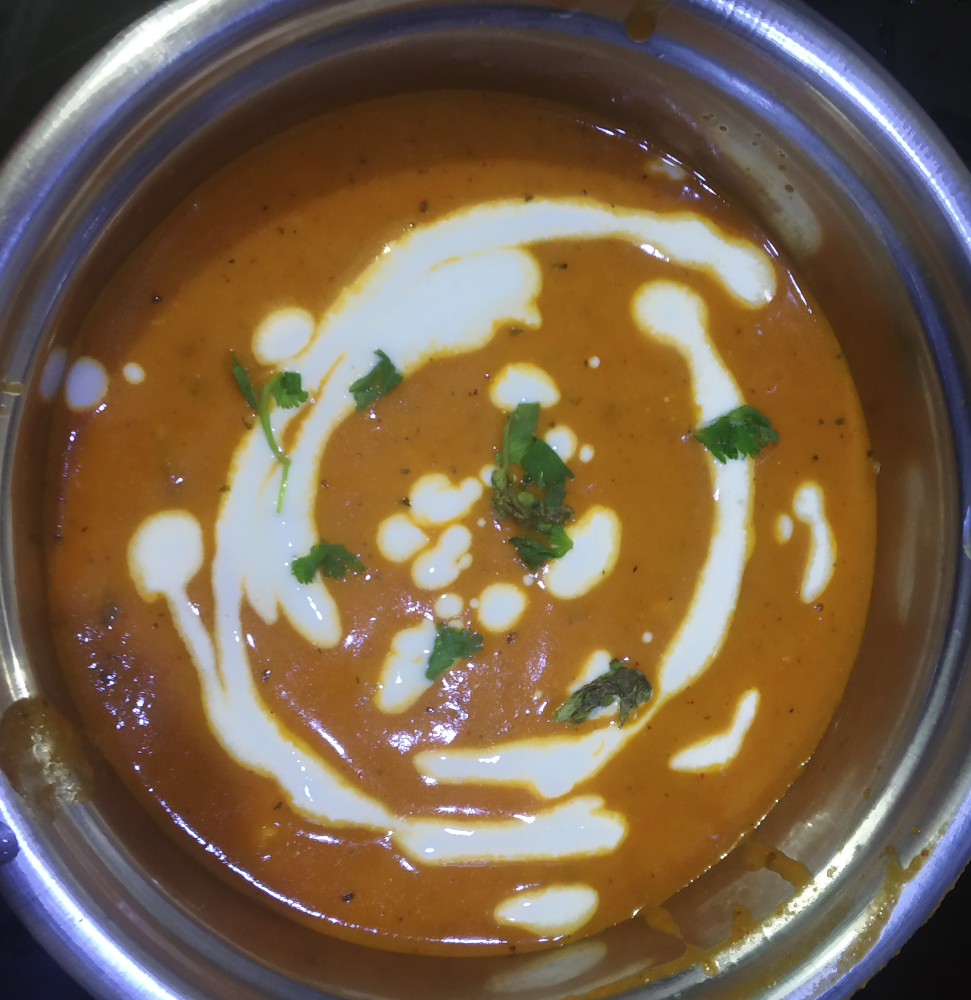

PANEER MAKHNI
In frame is Paneer makhani (also called paneer butter masala) is a slightly sweet creamy dish of paneer,
originating from the Indian subcontinent,
in which the gravy is prepared usually with butter (makhan), tomatoes, cashews or cream.
INGREDIENTS :
500g paneer
any refined oil
1 tablespoon ginger and garlic paste
1 onion ,3 tomatoes
1 tablespoon Garam masala,lal mirch powder,dhaniya powder,turmeric powder
cilantro/dhaniya leaves
1 cup curd
1/2 spoon kasturi methi
steps one can follow(if needed) :
First take paneer and fry them
Then add butter and oitl to pan and add ginger garlic paste with onions and tomato and cook it, then make a paste
After that again add 1 spoon oil and butter on pan and add this puree and the masalas and cook it well and then add paneer
Again cook for 5 minutes and then a d curd or cream and cook for 10 minutes and serve it hot with cilantro leaves on top